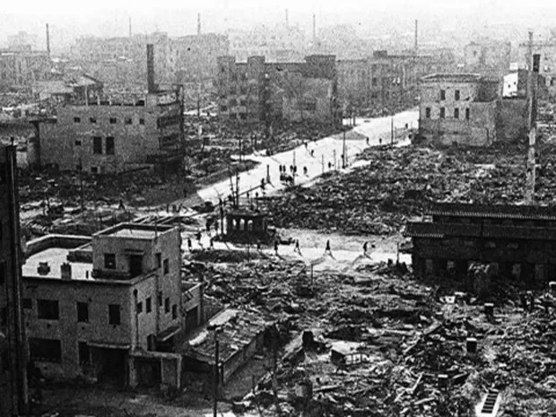
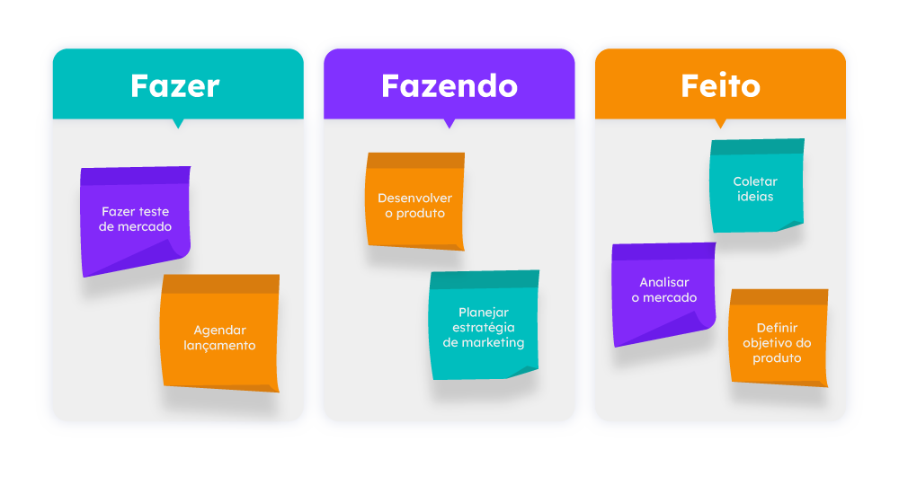
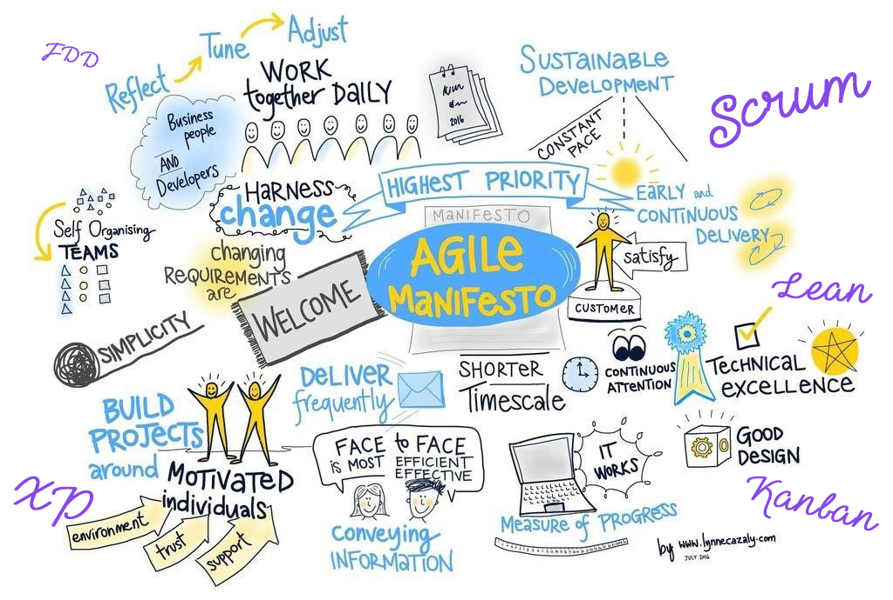

O Kanban surgiu no período pós-Segunda Guerra Mundial. O Japão precisava reorganizar e reestruturar sua indústria com os poucos recursos disponíveis. Além disso, naquele momento, o país não conseguia competir com o modelo de produção em massa adotado pelas indústrias americanas. Diante desse cenário, tornou-se necessário o desenvolvimento de um sistema mais eficiente, inteligente e econômico.

O criador
Nesse contexto, o engenheiro da Toyota, Taiichi Ohno, inspirou-se no funcionamento dos supermercados americanos. Ele observou que os produtos nas prateleiras eram repostos apenas quando eram retirados pelos clientes. Esse conceito simples revelou a lógica de um sistema de produção baseado na demanda real, evitando desperdícios e excesso de estoque. Assim nasceu o sistema Kanban, que se tornou um dos pilares do Sistema Toyota de Produção.
o Significado
A palavra KanBan vem do japones e significa "cartão" ou "placa visual". Originalmente, eram cartões físicos utilizados para sinalizar a necessidade de reposição de peças ou materiais dentro da fábrica.
FUNCIONAMENTO
Funcionamento
O kanban é um sistema que consiste em separar as atividades propostas em 3 categorias, que geralmente são:
A fazer
Categoria que lista tarefas que ainda precisam ser realizadas e ainda não foram inciadas.
Em andamento
Categoria que lista tarefas em andamento atualmente, mas que ainda não foram finalizadas.
Concluído
Categoria que lista tarefas já concluídas, o que auxilía no controle do andamento do projeto.

Limite de WIP
Uma parte importante do funcionamento do KanBan é o chamado limite de WIP, uma regra que define quantas tarefas podem estar em andamento ao mesmo tempo em uma determinada etapa do processo.
A adoção dessa regra previne a equipe de ficar sobrecarregada com várias taregas ao mesmo tempo, travando o progresso do projeto e evidenciando possíveis problemas no projeto com mais clareza.
Fluxo Contínuo
Atrelado à isso, o fluxo contínuo é o princípio de manter as tarefas se movendo constantemente pelo processo, evitando travamentos durante e entre as tarefas. A ideia é não trabalhar em grandes lotes, mas sim fazer uma tarefa fluir do início ao fim da forma mais estável e previsível possível.
Como numa linha de produção contínua: se uma etapa trava, tudo fica travado atrás dela e tudo se atrasa após ela.
APLICAÇÃO
Porque usar?
Fazer o uso desse sistema trás diversos benefícios para a equipe e para o projeto:
Organização visual;
Aumento de produtividade;
Redução de sobrecarga;
Melhor gestão de tempo.
Uso na área de TI
A área de Ti, em geral, aceitou e se adaptou muito bem ao uso do KanBan para realização de projetos, principalmente inserido nas metodologias ágeis, com uma integração com o Scrum e outras ferramentas, como:
Trello;
Jira;
Azure Devops;
Notion.

QUESTIONÁRIO
Vamos testar os conhecimentos adquiridos por você nesse informativo!